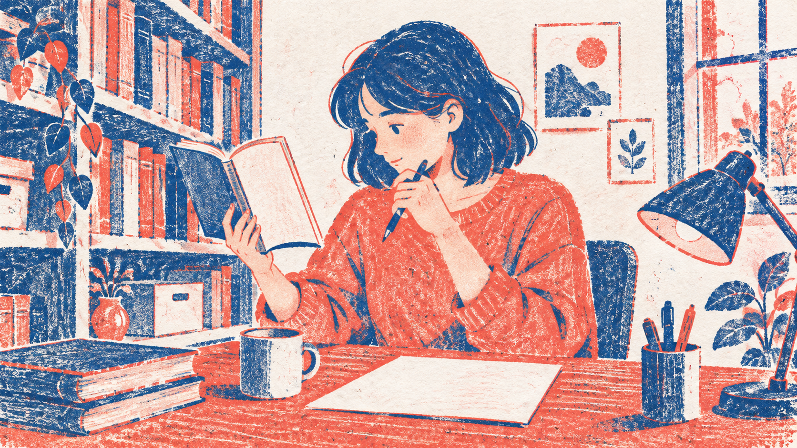
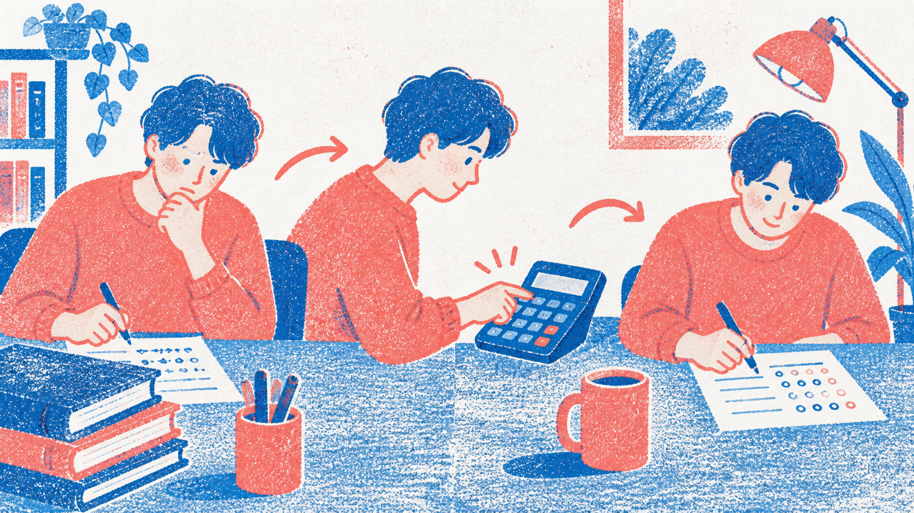

返回画廊查看最新纸雕系列：资料检索 × 工具调用 →
面试卡片：早期双色孔版候选
实际项目场景的候选素材研究，尚未接入产品，也没有学习效果证据。AI 生成，内置 imagegen，两次调用，无参考图。插画是类比，不是技术架构图。
查资料再回答

可作为查阅资料的辅助场景；不能单靠图片讲清检索、上下文与生成之间的技术关系。
查看实际请求风格包借助工具完成计算

出现连续动作和类似符号的笔迹，与预期单场景有所偏离；尚未验收。
查看实际请求风格包本次结论
- 两次均从已安装 Skill 的同一渲染器导出提示词，采用 duotone-print、16:9、风格配色优先。
- 配色与颗粒感延续，角色造型和布局没有锁定。
- 不能声称已经提升学习效果、稳定复现或上线使用。
- 下一步由用户验收是否适合作为内容配图；如需要严格教学图解，应使用可编辑文字与流程结构配合插画。